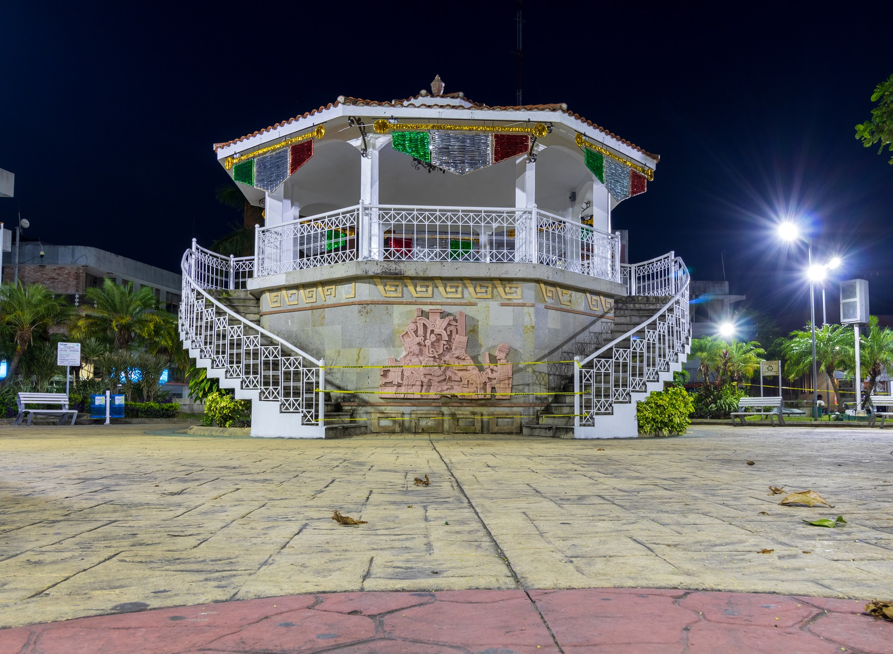
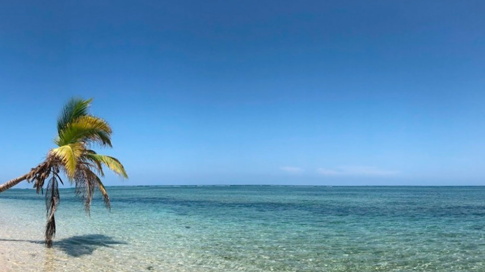

El Parque Reforma
Es un parque público con áreas verdes donde los lugareños y visitantes pueden relajarse, hacer ejercicio o disfrutar de un paseo tranquilo.
Playa Norte
Es una de las principales atracciones de Tuxpan. Su amplia extensión de arena dorada y aguas tranquilas la hacen ideal para nadar, tomar el sol o realizar actividades acuáticas.

Isla Lobos
Ubicada a unas millas de la costa de Tuxpan, esta isla es un paraíso para los amantes del buceo y el snorkel. La riqueza de su fauna marina y sus aguas cristalinas la convierten en una experiencia inolvidable. Los costos para visitarla pueden variar dependiendo del proveedor, estando alrededor de $1300 pesos mexicanos.
